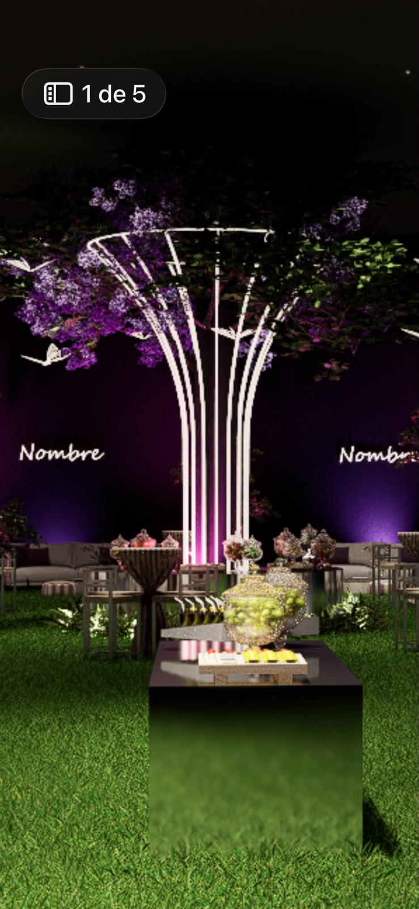
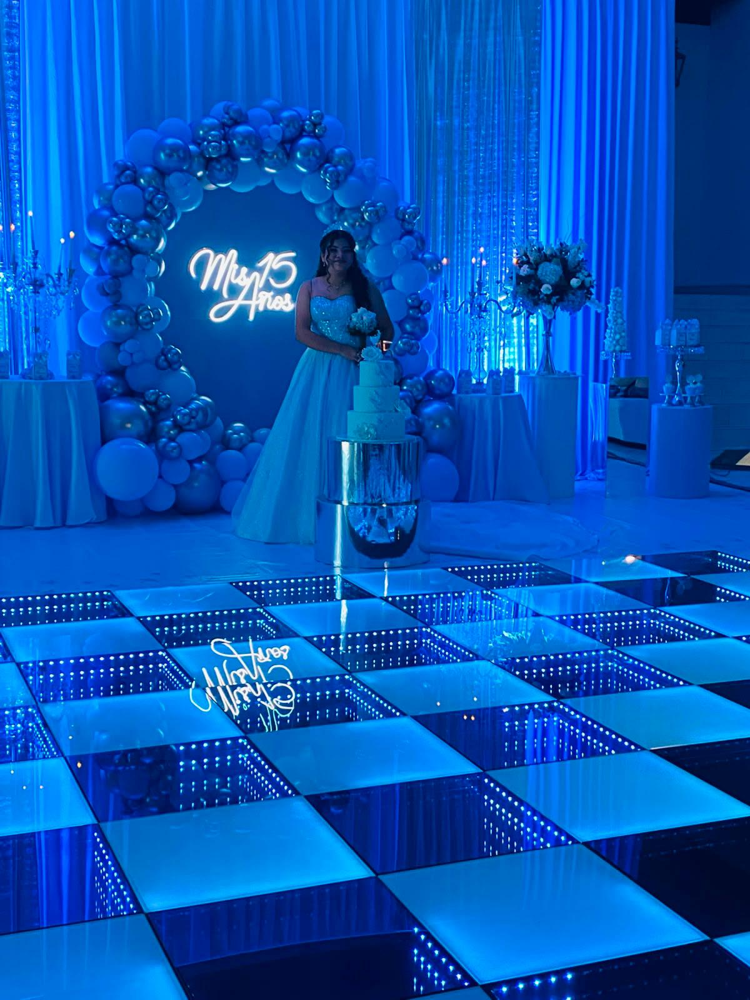

Hebraica
Sede identificada.
Horarios y accesos por coordinar.
 PROYECTOS / CAROLINEPista Infinity ↗
PROYECTOS / CAROLINEPista Infinity ↗CAROLINE · DISEÑO DE LUZ
14 parantes · opciones de 4 y 5 m.
Cada propuesta incluye los ambientes Minimalista y Fiesta.
ELIGE LA PROPUESTA
Propuesta 1 · 4 m de altura
No se pudo abrir el visor 3D. Prueba un navegador con WebGL habilitado.
METRAJE · PROPUESTA 1 / 4 M
El metraje sigue las curvas del modelo. Se actualiza al cambiar la propuesta.
Metrado conceptual de longitud iluminada. No incorpora cableado, reservas ni redondeo a tramos comerciales. El metraje final se valida con la estructura.

REFERENCIA DEL CLIENTEDE LA REFERENCIA A LA PROPUESTA
Conservamos la idea de un tronco esbelto que se abre hacia arriba. El modelo propone una distribución radial para poder revisar la pieza desde todos sus ángulos.
DOS FECHAS · DOS MONTAJES
Cada propuesta cubre dos fechas: una columna y una pista de 5 × 5 m en cada evento. Traslado, montaje y desmontaje independientes por sede. Calendario y horarios por confirmar.
Sede identificada.
Horarios y accesos por coordinar.
Distrito confirmado.
Dirección y horarios por coordinar.

VER FOTO COMPLETA ↗PISTA DE BAILE · REFERENCIA FOTOGRÁFICA
Módulos espejados alternados con puntos de luz que crean un efecto visual de profundidad. La fotografía muestra la referencia de acabado para la propuesta.
La fotografía es referencial y no acredita las medidas del montaje mostrado. Detalle económico en la cotización comercial.